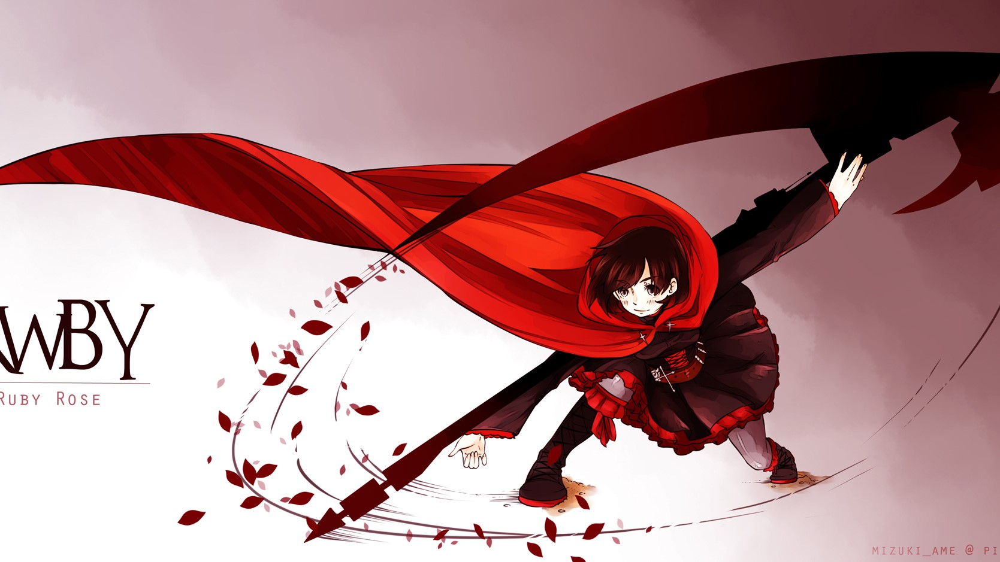

Ruby
美国网络动画《RWBY》中的女主角之一。有点天然呆，好奇心旺盛，并且敢于尝试各种大胆新奇的事物。古道热肠、充满正义感，鲁莽，大大咧咧，不拘小节，对外人保持着友善关怀的心，能轻易打开胸怀接纳每一个人成为朋友和伙伴。
Ozpin目睹了方才Ruby战斗时的飒爽英姿，并注意到她的银色瞳孔。当他问明了Ruby的师父之后，决定破格将她从Signal学院录取升入Beacon学院学习，并在始业式后成为RWBY小队的队长。
Ruby在始业式出色完成考核被任命为RWBY小队队长
Ruby等人全力绞杀入城戮兽，逮捕监禁了Roman。RWBY小队受到了银质勋章奖勋。
Ruby在目睹Pyrrha的逝去后崩溃中释放银瞳之力，毁掉了强大敌人cinder的左眼，封冻了无人能敌的飞龙。
Ruby等人了解到了世界是在不断重复正与恶交锋的循环，知道了她们必然失败的结局，但Ruby带领伙伴从低迷中走出，为了这个世界继续向前，继续战斗。
战斗经历
- 初次登场使用新月玫瑰取得与戮兽Beowolve战斗的胜利
- 第一季第1集使用新月玫瑰（Crescent Rose）助攻、体术和外像力“急速”，打赢Roman Torchwick等人
- 第一季第8集与Weiss、Blake、Yang一同战胜戮兽Nevermore
- 第二季第1集带领RWBY队取得与JNPR队的胜利
- 第二季第4集与Blake联合发动Ladybug，与Weiss合作发动Iceflower并最终击败Atlesian Paladin-290
| 时间 |
队友 |
敌人 |
| 初次登场 |
无 |
Beowolve |
| 第一季第1集 |
无 |
Roman Torchwick |
| 第一季第1集 |
Weiss、Blake、Yang |
Nevermore |
| 第二季第1集 |
Weiss、Blake、Yang |
JNPR队 |
| 第二季第4集 |
Blake、Weiss等 |
Roman Atlesian Paladin-290 |
图片

与他人关系
| 朋友 |
Weiss、Blake、Jaune、Nora、Pyrrha 、Lie、 |
| 亲人 |
uncle Qrow 、姐姐Yang Xiao Long、生母Summer Rose、父亲Taiyang Xiao Long |